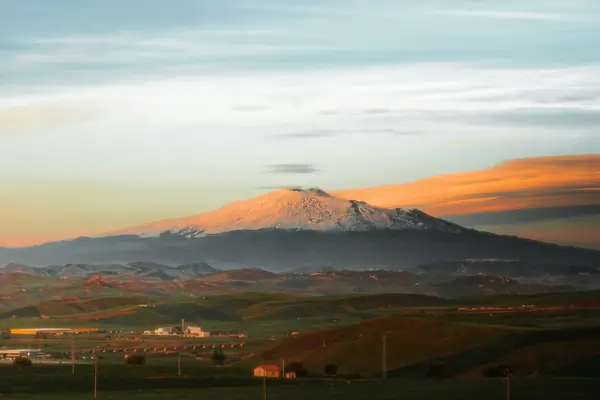

Home › Wine regions › Sicily
Sicily wine region

Photo: Daniel J. Schwarz on Unsplash
Volcanic and Mediterranean styles.
Vines grow in all 20 regions. Wines are classed DOCG, DOC and IGT.
Notable producers in Sicily
- Planeta
- Tasca d'Almerita
- Donnafugata
- Benanti
- COS
Official appellations
| Appellation | Status | Style | Grapes |
|---|---|---|---|
| Cerasuolo di Vittoria (2005) Sicily's first DOCG, around the town of Vittoria in the island's south-east. A blend of 50-70% Nero d'Avola with Frappato, giving bright, cherry-scented reds; a Classico version comes from the historic core. | DOCG | Red | Nero d'Avola, Frappato |
| Sicilia (2011) Island-wide DOC: Nero d'Avola, Grillo and other natives. | DOC | White, Red | Nero d'Avola, Grillo, Catarratto, Frappato |
| Alcamo Catarratto-based whites in western Sicily. | DOC | White, Red | Catarratto, Nero d'Avola |
| Contea di Sclafani Inland DOC; home of Regaleali (Tasca d'Almerita). | DOC | White, Red | Nero d'Avola, Catarratto |
| Contessa Entellina Small DOC; Donnafugata's home estate. | DOC | White, Red | Ansonica, Nero d'Avola |
| Delia Nivolelli Near Marsala. | DOC | White, Red | Grillo, Nero d'Avola |
| Eloro South-eastern DOC; includes Pachino. | DOC | Red | Nero d'Avola |
| Erice Hills around Erice near Trapani. | DOC | White, Red | Grillo, Catarratto |
| Etna (1968) Volcanic, high-altitude Nerello Mascalese reds and Carricante whites, with contrade single sites. | DOC | Red, White, Rosé | Nerello Mascalese, Carricante |
| Faro Tiny DOC near Messina. | DOC | Red | Nerello Mascalese, Nerello Cappuccio, Nocera |
| Malvasia delle Lipari Sweet passito Malvasia from the Aeolian Islands. | DOC | Sweet | Malvasia |
| Mamertino di Milazzo North-east DOC with ancient Roman roots. | DOC | White, Red | Nero d'Avola, Nocera, Grillo |
| Marsala (1969) Fortified wine from Trapani, from Fine to Vergine and Soleras. | DOC | Fortified | Grillo, Catarratto, Inzolia |
| Menfi South-west coast DOC. | DOC | White, Red | Chardonnay, Nero d'Avola |
| Monreale Hills behind Palermo. | DOC | White, Red | Catarratto, Perricone |
| Noto Nero d'Avola reds and Moscato di Noto. | DOC | Red, Sweet | Nero d'Avola, Moscato Bianco |
| Pantelleria (1971) Passito di Pantelleria: sweet Zibibbo from bush vines on a windswept island. | DOC | Sweet | Zibibbo |
| Riesi Inland Caltanissetta DOC. | DOC | White, Red | Nero d'Avola |
| Salaparuta Western DOC. | DOC | White, Red | Nero d'Avola, Catarratto |
| Sambuca di Sicilia Agrigento-province DOC. | DOC | White, Red | Ansonica, Nero d'Avola |
| Santa Margherita di Belice Small western DOC. | DOC | White, Red | Ansonica, Nero d'Avola |
| Sciacca South-west coast DOC. | DOC | White, Red | Nero d'Avola, Inzolia |
| Siracusa Includes Moscato di Siracusa. | DOC | Red, Sweet | Nero d'Avola, Moscato Bianco |
| Vittoria Frappato and Nero d'Avola from the Cerasuolo area. | DOC | Red | Frappato, Nero d'Avola |
Sicily wines to try
Planeta Cerasuolo di Vittoria
Sicily · Cerasuolo di Vittoria · Nero d'Avola, Frappato
Juicy and bright: red cherry, strawberry and gentle spice.
Food: Tuna, pasta alla Norma
Mandrarossa Zibibbo Secco
Sicily · Sicilia · Zibibbo (Muscat of Alexandria)
Dry, aromatic Sicilian Muscat: orange blossom and citrus.
Food: Spicy food, fish
Pianogrillo Curva Minore Cerasuolo di Vittoria
Sicily · Cerasuolo di Vittoria · Nero d'Avola, Frappato
Organic Sicilian blend: red berries and freshness.
Food: Tuna, pasta
Benanti Etna Bianco
Sicily · Etna · Carricante
Volcanic Carricante: lemon, green apple and aniseed with a flinty, saline finish.
Food: Swordfish, pasta alle sarde
Arianna Occhipinti SP68 Rosso
Sicily · Terre Siciliane IGT · Frappato, Nero d'Avola
Bright, juicy and unoaked: wild strawberry, pomegranate and orange peel with a lightly chilled-friendly freshness.
Food: Caponata, tuna steak, pizza
More wine regions in Italy
The Wine Reference newsletter
New wines, stories and career guides, one email a week at most.
Over 18s only. Unsubscribe any time with one click. Your email is stored securely by Kit and never shared.
Support The Wine Reference
This guide is free, with no paywall. If it helped you choose a bottle, you can buy me a glass and keep it growing.
🍷 Buy me a glass